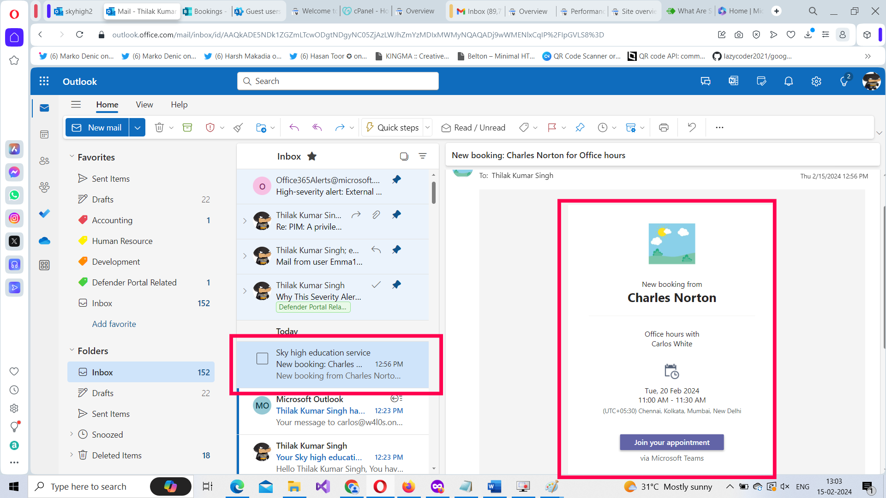

How to Create Bookings in Microsoft 365?
Note: Most of the images contained within this article are gifs. Click them to understand how Microsoft To dos work better.
Bookings app helps you create multiple booking pages for your organization. Booking pages allow you to:
- Book appointments with your customers,
- Decide the appointment duration and slots,
- Decide whether it’s going to be free or paid service,
- Select users who will service the customers etc.,
Let’s understand how you can create such bookings, customize the business hours and set up a dedicated team to service the customer bookings using the Microsoft 365 bookings app.
Accessing Microsoft 365 Bookings App
Microsoft Forms can be accessed in 2 ways:
- By clicking this URL: https://outlook.office.com/bookings/homepage
-
From the App Launcher: If this is your first working with Microsoft Bookings, then it will not be available within the listed apps in the app launcher. You’ll have to select App Launcher >> Explore all your Apps >> and you’ll find the Forms app under Productivity tab.
Note: Once you start using Microsoft Bookings, you’ll notice that it gets listed in the list of App Launcher apps.
Creating the Bookings Page
Follow the instruction below to create a shared booking page - for your organization – to be shared among individuals who are going to serve the customers.
Note: Every Microsoft 365 user also gets a pre-configured personal booking page as well.
Step 1: Adding Name, Business type and Business hours
Provide a name for the booking service and add a logo. Then select the business type from the available options and configure the business hours.Note: Default business hours is configured for you, but you can modify this to suit your requirements by clicking the Change link as shown in the image below. Click Next to proceed further.
Step 2: Invite Staff
Select users by typing their usernames and selecting them from the list. You can also change the user role while adding users. Note: The one creating the bookings page becomes its administrator by default as shown in the image below. Read user roles for more info.
Step 3: Set up a booking service or use the default option
You can either go with the default service configured for you or modify it to suit your organization requirements. Here you decide the schedule for your booking service alone within your office hours. Note: It’s best to leave the Make this a Team meeting option enabled as customers mostly want to meet online these days.
Step 4: Choose who can book appointments
Select who can use this service. You have 2 options to choose from: (i) People in my organization and (ii) Anyone. It’s best to go with Anyone option the first time since you probably want deal with customers who are outsiders as well. Click Create to create the booking page.
Once the booking page is ready, you get a link to the booking page as shown in the image. Make note of it as you will need it in the future. You can either close the booking page by clicking the close icon or click the Get Started button now to further explore your newly created booking.
Booking the Service as Customer
It’s best to test out how the booking service works even before you explore it further, as this helps you understand Microsoft 365 Bookings better. So try pasting the link you obtained in the previous step in a separate browser tab and see what happens. The booking page you just created gets served – as shown in the image - and you’ll be able to book the service as customer.
Try using this booking service as a customer with an alternate email address or even a fictional email address as shown in the image below.
You’ll notice that as a customer you get to select who you want to interact with and the booking schedule. Once the booking is complete, you can reschedule or cancel it as shown in the image. And since the booking service is a shared booking service among a group of users, all of them – not just the user chosen by the customer - receive the booking notification.
Viewing the Customer Booking
The booking you create appears as a card. You should click on it to access the booking page as shown in the second image.
You can view the customer booking in 2 ways:
From the Calendar Tab
If you modify the Day by Staff view to Month option, then the customer booking gets displayed clearly as shown in this image. Click on the booking card to view who the booking is assigned to.
Note: You can also notice that Edit and Cancel options are available on the booking card.
From the Staff Tab
If you click the Staff tab and select the user on whose name the booking was made, the booking details get displayed with the user profile as shown in the image.
Booking Service on Behalf of Customer
What if the customer agreed for an appointment over phone? You can create bookings on customer behalf from the Calendar tab by clicking the New booking button at the top-left corner. Note: If this customer is a first-timer, then the customer details get added to the Customers tab.
Users can also book customer appointments by clicking the Book appointment button from within their profile and filling out the meeting details.
Handling Multiple Services Within a Booking
You can have multiple services running – each handled by specific user or users – within a booking service. To create a new service, select the Services tab and click on the Add new service option at the top.
The Add service box opens. Name the service and provide a description. Decide whether the service would be online or not. Set the meeting duration. Set Buffer time if required. If it’s going to be a paid service, then specify the same using the Price not set dropdown. Add notes, if any. Click Save changes button to add the service.
Notes:
- Buffer time is the leeway you might offer to the customer before and after the meeting duration has concluded. Buffer time is usually implemented for paid service so that the customer is charged accordingly.
How Multiple Services Appear to Customers
Your booking page will now contain 2 services – the default one (created when you setup the booking) and Payment Enquiries (the one created in the previous step). Notice that if you select Payment Enquiries service, only those users who were selected for the service get listed as shown in the image.
Managing Your Booking Page
Here you can manage your booking page and various elements associated with it. Some of the actions you can perform here are:
-
Get the Embed Code for your Booking Page – and publish it on your website.

- Disable Search Indexing and Set Password – you can disable search engine indexing for the booking page and also password protection creation of bookings.
- Display Customer data usage consent – you choose to display a disclaimer in your bookings explaining that you’ll be collecting customer data when they make the booking.
- Modify Default scheduling policy – you can also modify the default scheduling policy that is set up for you when you create a booking to suit your requirements.
- Customize your booking page – you can also customize your booking page’s color and design.
- Region and time zone settings – you can also modify region and time zone settings to suit your requirements.
Managing Your Business Information
You can do the following under the Business Information tab:
- Basic Details – the business details you provided while setting up the bookings page like the business name, address, phone, business type etc., can be modified here.
- Privacy Policy/Terms and conditions – if you have a privacy policy/terms and conditions page configured for your company, you can add its URL so that the same can be displayed in the bookings page.
- Business logo – helps you modify your business logo.
- Business hours – helps you modify business hours.
Note: ACS App Integration is an advanced topic which deserves its own article.
Integrations
You can also integrate bookings app with Power Automate and build automated workflows with other products and services like Microsoft 365 Dynamics, Forms, SharePoint, Outlook etc., These workflows can enhance your booking team’s productivity. Note: You should be the shared booking page administrator and have a Power Automate license to create automated workflows.
Additional Notes
You can also do the following in Microsoft Bookings:
- Add Customers from Customers tab: You can also add customers from customers tab by clicking the Add new customer button and filling in the customer details. i
-
Import Customers from CSV file: You can also bulk import customers into your booking page from a CSV file by using the Import button.

-
Book appointments from Customers tab: You can also Book appointments from Customer tab by clicking the Book appointment button.